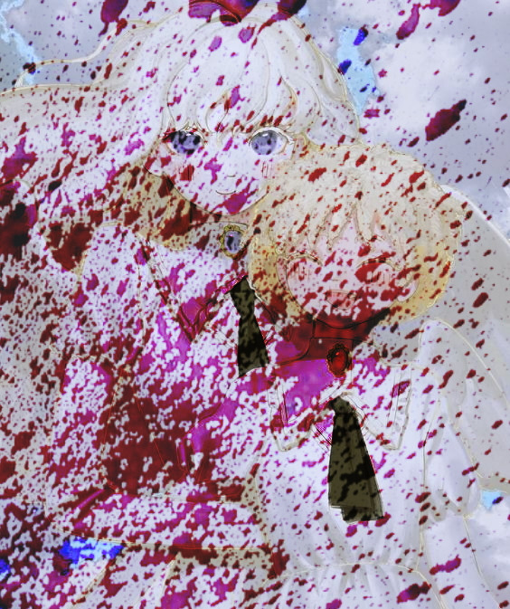

— Книга "Герои наших дней"
Сколько стоит жизнь? За что стоит умирать?
Как растут настоящие герои?
И стоит ли дать бой, невзирая ни на что?
Молодой автор, современник тех эпохальных событий, создал своё произведение, вдохновившись отвагой и мужеством, которыми обладали эти люди. Родившийся в суровых сибирских краях, Сержо Сергей Константинович посвятил свой рассказ героям — людям несгибаемым духом и силой воли.
ВПИ: "Смерть, Корона, Испания"
— Читать

― История "После Конца."
Император покинул престол, спасаясь бегством на север вместе с верным спутником Хаббиасом, оставив столицу Чара-Град беззащитной перед наступающими войсками Святого Государства. Решительная битва неизбежна, судьба страны висит на волоске. Кто осмелится стать последним защитником города? Какие испытания предстоит пройти героям? Эта захватывающая история откроет завесу тайны и покажет, как смелость и честь живут, там где уже ничего не осталось.
ВПИ: "Федерация RussLand"
— Читать

― История "Шаг в бесконечность"
Флор це Булько, человек, который носил на своих плечах страх целого мира, стоял на краю пропасти. Его мир, вся его жизнь, вся его ответственность рухнули в одну минуту. И теперь он стоял перед неизбежностью. Перед лицом смерти, которая не делала разницы между героем и простым человеком. В его глазах отражалось усталость, усталость от нескончаемой борьбы, от непрекращающегося страха. Он хотел отпустить это бремя, он хотел увидеть солнце, почувствовать ветер на своей коже, услышать смех своих любимых. Что же он будет делать, столкнувшись с самой смертью?
ВПИ: "Сталь 1925"
— Читать

― Рассказ "Не оставляй меня"
ВПИ «Нового Подъёма» — это не просто история, это целый мир со своими тайнами и загадками. За основной сюжетной линией скрывается множество скрытых сюжетных линий, которые могут вас удивить и даже шокировать. Под занавесом тайны вы узнаете о смерти представителей королевской семьи империй Варлии и Ворлии — императрицы Анны и её младшего брата Ворли. Вы узнаете о трагической подоплёке всей ситуации и ужасной тайне, которая перевернёт ваше представление о происходящем.
ВПИ: "Нового Подъема"
— Читать
― История "Чара-Град"
Множество смертей, молодой солдат армии, защитник Чараграда, последний выживший в городе, пробирается во дворец императора. Он проходит через руины дворца и оказывается в главном зале — покоях императора. Там он видит Чариуса, который держит в руках пистолет, а на коленях у него лежит императрица, её золотистые волосы обвивают колени Чариуса. Внезапно происходит нечто, что выходит за рамки человеческого понимания. Лойс видит другие миры.
ВПИ: "Разлом безумия"
— Читать
ㅤ